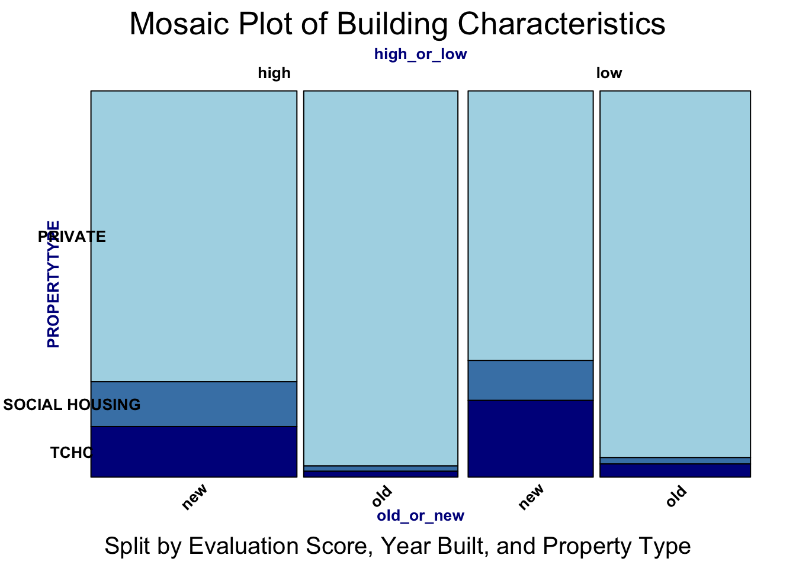
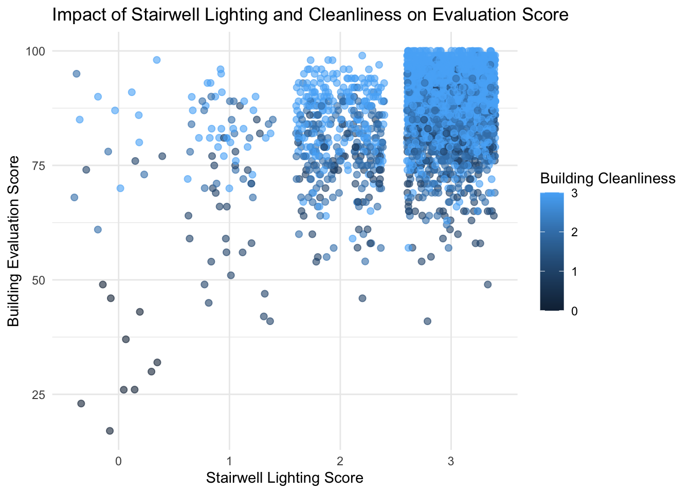

Code
suppressMessages(suppressWarnings({
library(ggplot2)
library(readr)
library(dplyr)
library(tidyr)
library(viridis)
library(vcd)
library(grid)
library(ggalluvial)
library(GGally)
library(ggridges)
}))suppressMessages(suppressWarnings({
library(ggplot2)
library(readr)
library(dplyr)
library(tidyr)
library(viridis)
library(vcd)
library(grid)
library(ggalluvial)
library(GGally)
library(ggridges)
}))suppressMessages(suppressWarnings({
building <- read_csv("/Users/ruobingzhang/Documents/==/columbia/sem1/stat5702EDA/EDAfinal2/Apartment Building Evaluations 2023 - current.csv")
# List of all columns containing "N/A"
columns_to_clean <- c(
"FENCING", "RETAINING WALLS", "CATCH BASINS / STORM DRAINAGE", "BALCONY GUARDS",
"EXT. RECEPTACLE STORAGE AREA", "CLOTHING DROP BOXES", "ACCESSORY BUILDINGS",
"INTERCOM", "LAUNDRY ROOM", "INT. RECEPTACLE STORAGE AREA", "MAIL RECEPTACLES",
"EXTERIOR DOORS", "STORAGE AREAS/LOCKERS MAINT.", "POOLS", "OTHER AMENITIES",
"PARKING AREAS", "GARBAGE/COMPACTOR ROOM", "ELEVATOR MAINTENANCE",
"ELEVATOR COSMETICS", "COMMON AREA VENTILATION", "CHUTE ROOMS - MAINTENANCE",
"EXTERIOR GROUNDS", "BUILDING EXTERIOR", "WINDOWS", "EXTERIOR WALKWAYS",
"LOBBY - WALLS AND CEILING", "LOBBY FLOORS", "INT. HALLWAY - WALLS / CEILING",
"INTERIOR HALLWAY FLOORS", "INT. LOBBY / HALLWAY LIGHTING",
"ELECTRICAL SERVICES / OUTLETS", "STAIRWELL - WALLS AND CEILING",
"STAIRWELL - LANDING AND STEPS", "STAIRWELL LIGHTING",
"INT. HANDRAIL / GUARD - SAFETY", "INT. HANDRAIL / GUARD - MAINT."
)
# Replace "N/A" with NA in the specified columns
building[columns_to_clean] <- lapply(building[columns_to_clean], function(column) {
column[column == "N/A"] <- NA
return(column)
})
for (column in columns_to_clean) {
missing_count <- sum(is.na(building[[column]]))
if (missing_count > 100) {
building[[column]] <- NULL
} else {
building[[column]][is.na(building[[column]])] <- median(building[[column]], na.rm = TRUE)
}
}
}))# For 'year_built' and 'year_registered', impute with median
building$`YEAR BUILT`[is.na(building$`YEAR BUILT`)] <- median(building$`YEAR BUILT`, na.rm = TRUE)
building$`YEAR REGISTERED`[is.na(building$`YEAR REGISTERED`)] <- median(building$`YEAR REGISTERED`, na.rm = TRUE)
# For 'x' and 'y', impute with mean
building$X[is.na(building$X)] <- mean(building$X, na.rm = TRUE)
building$Y[is.na(building$Y)] <- mean(building$Y, na.rm = TRUE)
# Exclude 'logitude' and 'latitude' columns
building <- building[, !colnames(building) %in% c("logitude", "latitude")]
# Rename 'PROPRTTY TYPE' for future plot
building <- building |>
rename(PROPERTYTYPE = `PROPERTY TYPE`)ggplot(building, aes(x = `CURRENT BUILDING EVAL SCORE`)) +
geom_histogram(
aes(y = after_stat(density)),
binwidth = 3,
fill = "skyblue",
color = "white",
alpha = 0.8
) +
geom_density(
color = "darkred",
size = 1.2,
linetype = "dashed"
) +
labs(
title = "Distribution of Current Building Evaluation Scores",
subtitle = "Histogram with density overlay",
x = "Current Condo Evaluation Scores",
y = "Density"
) +
theme_minimal() +
theme(
plot.title = element_text(size = 16, face = "bold", hjust = 0.5),
plot.subtitle = element_text(size = 12, face = "italic", hjust = 0.5),
axis.text = element_text(size = 10),
axis.title = element_text(size = 12, face = "bold")
)Warning: Using `size` aesthetic for lines was deprecated in ggplot2 3.4.0.
ℹ Please use `linewidth` instead.
The distribution appears to be left-skewed, with the majority of condo evaluation scores concentrated on the higher end (around 75–100). This indicates that most buildings in Toronto have relatively high evaluation scores, with fewer buildings falling in the lower quality range.
cleveland_data <- building |>
filter(!is.na(`CURRENT BUILDING EVAL SCORE`), !is.na(WARDNAME), !is.na(PROPERTYTYPE))
ward_scores <- cleveland_data |>
group_by(WARDNAME, PROPERTYTYPE) |>
summarise(AverageScore = mean(`CURRENT BUILDING EVAL SCORE`, na.rm = TRUE), .groups = "drop") |>
arrange(AverageScore)
ggplot(ward_scores, aes(x = AverageScore, y = reorder(WARDNAME, AverageScore), color = PROPERTYTYPE)) +
geom_point(size = 3, alpha = 0.6) +
geom_segment(aes(x = min(AverageScore), xend = AverageScore,
y = reorder(WARDNAME, AverageScore),
yend = reorder(WARDNAME, AverageScore)),
color = "grey70", size = 0.5) +
labs(
title = "Cleveland Dot Plot of Evaluation Scores",
subtitle = "Comparison of average scores across wards, colored by property type",
x = "Average Current Building Evaluation Score",
y = "Ward Name",
color = "Property Type"
) +
theme_minimal(base_size = 14) +
theme(
plot.title = element_text(hjust = 0.5, face = "bold", size = 18, color = "#333333"),
plot.subtitle = element_text(hjust = 0.5, size = 14, color = "#666666"),
axis.text.x = element_text(size = 12, color = "#333333"),
axis.text.y = element_text(size = 12, color = "#333333"),
axis.title.x = element_text(size = 14, face = "bold", color = "#333333"),
axis.title.y = element_text(size = 14, face = "bold", color = "#333333"),
panel.grid.major.x = element_line(color = "grey90"),
panel.grid.minor.x = element_blank(),
panel.grid.major.y = element_blank()
) +
scale_color_viridis_d() 
Based on this Cleveland dot plot, the scores vary slightly across wards, but overall, private properties consistently have higher average scores. This suggests that the quality of housing may be influenced by property type, with private housing generally outperforming the others.
filtered_data <- building |>
filter(!is.na(WARDNAME) & !is.na(`CURRENT BUILDING EVAL SCORE`))
ggplot(data = filtered_data, aes(
x = `CURRENT BUILDING EVAL SCORE`,
y = WARDNAME,
fill = WARDNAME
)) +
geom_density_ridges(scale = 2, alpha = 0.8) +
scale_fill_viridis_d(option = "plasma") +
labs(
title = "Ridgeline Plot of Current Eval Scores",
x = "Current Building Evaluation Score",
y = "Ward Name",
fill = "Ward"
) +
theme_minimal(base_size = 16) +
theme(
plot.title = element_text(hjust = 0.5, size = 20, face = "bold"),
axis.text.x = element_text(size = 12, angle = 0),
axis.text.y = element_text(size = 12),
axis.title.x = element_text(size = 14, face = "bold"),
axis.title.y = element_text(size = 14, face = "bold"),
legend.position = "none"
)Picking joint bandwidth of 2.52
filtered_data <- filtered_data %>%
group_by(WARDNAME) %>%
mutate(MedianScore = median(`CURRENT BUILDING EVAL SCORE`, na.rm = TRUE)) %>%
ungroup() %>%
mutate(WARDNAME = reorder(WARDNAME, MedianScore))
ggplot(data = filtered_data, aes(
x = `CURRENT BUILDING EVAL SCORE`,
y = WARDNAME,
fill = WARDNAME
)) +
geom_density_ridges(scale = 2, alpha = 0.8) +
scale_fill_viridis_d(option = "plasma") +
scale_x_continuous(
limits = c(40, NA),
expand = c(0, 0)
) +
labs(
title = "Ridgeline Plot of Current Eval Scores",
x = "Current Building Evaluation Score",
y = "Ward Name",
fill = "Ward"
) +
theme_minimal(base_size = 16) +
theme(
plot.title = element_text(hjust = 0.5, size = 20, face = "bold"),
axis.text.x = element_text(size = 12, angle = 0),
axis.text.y = element_text(size = 12),
axis.title.x = element_text(size = 14, face = "bold"),
axis.title.y = element_text(size = 14, face = "bold"),
legend.position = "none"
)Picking joint bandwidth of 2.49Warning: Removed 7 rows containing non-finite values (`stat_density_ridges()`).
This ridgeline plot shows a different ranking of evaluation scores based on ward than the previous Cleveland dot plot, as the former one used raw scores whereas the latter one used mean scores. Some wards show a wider spread of scores (e.g., Scarborough Guildwood, Davenport), suggesting greater variability in housing quality within those areas. Wards like Willowdale and Scarborough North appear to have relatively higher median evaluation scores, as seen by the placement of their peaks.
median_val <- median(building$`CURRENT BUILDING EVAL SCORE`, na.rm = TRUE)
iqr_val <- IQR(building$`CURRENT BUILDING EVAL SCORE`, na.rm = TRUE)
building$robust_scaled_score <- (building$`CURRENT BUILDING EVAL SCORE` - median_val) / iqr_val
building$robust_scaled_score <- (building$`CURRENT BUILDING EVAL SCORE` - median_val) / iqr_val
ggplot(building, aes(x = X, y = Y, color = `CURRENT BUILDING EVAL SCORE`)) +
geom_point(size = 2, alpha = 0.6) +
scale_color_gradient(low = "red", high = "green") +
labs(title = "Building Evaluation Scores by Location", x = "Longitude", y = "Latitude", color = "Score") +
theme_minimal()
# Define a threshold for low scores (e.g., below the first quartile)
low_threshold <- quantile(building$`CURRENT BUILDING EVAL SCORE`, 0.01, na.rm = TRUE)
# Add a new column to classify points
building$score_category <- ifelse(building$`CURRENT BUILDING EVAL SCORE` < low_threshold, "Low", "Others")
# Plot with highlighted low scores
ggplot(building, aes(x = X, y = Y)) +
geom_point(aes(color = `CURRENT BUILDING EVAL SCORE`), size = 2, alpha = 0.6) + # General points
geom_point(data = subset(building, score_category == "Low"),
aes(x = X, y = Y), color = "blue", size = 3, shape = 4) + # Highlight low scores
scale_color_gradient(low = "red", high = "green") +
labs(
title = "Building Evaluation Scores by Location",
x = "Longitude",
y = "Latitude",
color = "Score"
) +
theme_minimal()
ggplot(building, aes(x = `YEAR BUILT`, y = `CURRENT BUILDING EVAL SCORE`)) +
stat_bin2d(
bins = 50,
aes(fill = ..count..)
) +
scale_fill_gradientn(
colors = viridis::turbo(10),
name = "Building Count"
) +
labs(
title = "Building Evaluation Scores by Year Built",
subtitle = "Density of Buildings Evaluated Across Different Years",
x = "Year Built",
y = "Building Evaluation Score"
) +
theme_minimal(base_size = 16) +
theme(
plot.title = element_text(
size = 22, face = "bold", hjust = 0.5, color = "#333333"
),
plot.subtitle = element_text(
size = 16, hjust = 0.5, color = "#555555"
),
axis.title.x = element_text(size = 14, face = "bold"),
axis.title.y = element_text(size = 14, face = "bold"),
axis.text = element_text(size = 12, color = "#333333"),
legend.title = element_text(size = 12, face = "bold"),
legend.text = element_text(size = 10),
panel.grid.major = element_line(color = "gray85", linewidth = 0.5),
panel.grid.minor = element_blank()
)Warning: The dot-dot notation (`..count..`) was deprecated in ggplot2 3.4.0.
ℹ Please use `after_stat(count)` instead.
The heatmap shows that most buildings are built a bit after 1950 as the red center is positioned at around 1960. Overall, the majority of buildings were constructed between 1950 and 2000, whereas buildings constructed before 1900 are sparse. There are still a few buildings plotted after 2000, possibly because of limited data availability or fewer constructions.
building$YearGroup <- cut(
building$`YEAR BUILT`,
breaks = quantile(building$`YEAR BUILT`, probs = c(0, 1/3, 2/3, 1), na.rm = TRUE),
labels = c("Early Period", "Mid Period", "Recent Period"),
include.lowest = TRUE
)
allu_data <- building |>
group_by(YearGroup, PROPERTYTYPE) |>
summarise(Count = n(), .groups = "drop") |>
ungroup()
ggplot(data = allu_data,
aes(x = YearGroup, stratum = PROPERTYTYPE, alluvium = PROPERTYTYPE, y = Count)) +
geom_flow(aes(fill = PROPERTYTYPE), curve_type = "sigmoid", alpha = 0.8) +
geom_stratum(width = 1/8, fill = "grey", color = "black") +
geom_text(stat = "stratum", aes(label = after_stat(stratum)),
size = 2, color = "black", vjust = 0.5) +
scale_fill_viridis_d(option = "plasma", name = "Property Type") +
labs(
x = "Year Built Group",
y = "Count of Properties",
title = "Alluvial Diagram of Property Types by Year Built Group"
) +
theme_minimal(base_size = 14) +
theme(
plot.title = element_text(hjust = 0.5, size = 16, face = "bold"),
axis.text.x = element_text(size = 12, angle = 30, hjust = 1),
axis.text.y = element_text(size = 12),
axis.title = element_text(size = 14),
legend.position = "right",
legend.title = element_text(size = 12),
legend.text = element_text(size = 10)
)
The alluvial diagram splits the year built into three equal groups, we can observe that across all periods, private properties are the most prevalent property type. But as recent period approaches, the proportions of social housing and TCHC (Toronto Community Housing Corporation) have increased a lot, despite that private housing still dominates.
building <- building |>
mutate(
old_or_new = ifelse(`YEAR BUILT` > 1960, "new", "old"),
high_or_low = ifelse(
`CURRENT BUILDING EVAL SCORE` >= mean(`CURRENT BUILDING EVAL SCORE`, na.rm = TRUE),
"high", "low"
)
)
mosaic(
~ high_or_low + old_or_new + PROPERTYTYPE,
data = building,
highlighting = "PROPERTYTYPE",
highlighting_fill = c("#ADD8E6", "#4682B4", "#00008B"),
direction = c("v", "v", "h"),
main = "Mosaic Plot of Building Characteristics",
sub = "Split by Evaluation Score, Year Built, and Property Type",
labeling_args = list(
gp_labels = gpar(fontsize = c(10, 8, 6), fontface = "bold"),
gp_varnames = gpar(fontsize = 10, fontface = "bold", col = "darkblue"),
rot_labels = c(0, 0, 45),
just_labels = c("center", "center", "center")
),
keep_aspect_ratio = FALSE,
margins = unit(c(2, 2, 2, 4), "lines")
)
The mosaic plot further validates the result from alluvial diagram that private buildings are dominant, whereas its proportion decreases overtime. Thus, the proportion of non-private buildings appears to be higher in the new buildings category compared to the old. As for evaluation scores, older buildings tend to have both high and low evaluation scores, but the overall presence of social housing and TCHC in these buildings is minimal.
ggplot(building, aes(x = `YEAR BUILT`, y = `CURRENT BUILDING EVAL SCORE`)) +
geom_point(color = "dodgerblue", alpha = 0.4, size = 2) +
geom_smooth(method = "lm", color = "darkred", linetype = "dashed", se = FALSE, size = 1) +
facet_wrap(~ `BUILDING CLEANLINESS`, ncol = 2) +
labs(
title = "Scatterplot: Current Building Evaluation Score vs Year Built",
subtitle = "Faceted by Building Cleaniness",
x = "Year Built",
y = "Current Building Evaluation Score"
) +
theme_minimal(base_size = 14) +
theme(
plot.title = element_text(size = 16, face = "bold", hjust = 0.5, color = "darkblue"),
plot.subtitle = element_text(size = 12, face = "italic", hjust = 0.5, color = "gray40"),
strip.text = element_text(size = 14, face = "bold", color = "darkgreen"),
axis.title = element_text(size = 12, face = "bold"),
axis.text = element_text(size = 10),
panel.grid.major = element_line(color = "gray80", linetype = "dotted"),
panel.grid.minor = element_blank(),
panel.background = element_rect(fill = "white", color = "gray90"),
strip.background = element_rect(fill = "lightgray", color = "gray70"),
plot.margin = margin(t = 10, r = 10, b = 10, l = 10)
)`geom_smooth()` using formula = 'y ~ x'
Across all facets, there seems to be a positive trend where newer buildings generally have higher evaluation scores. Higher cleanliness levels (2 and 3) are associated with higher evaluation scores, regardless of building age, whereas poor cleanliness (level 0) is more common in older buildings, highlighting a potential focus area for improvement in housing quality.
data_for_plot <- building[, c("YEAR BUILT", "BUILDING CLEANLINESS", "CONFIRMED STOREYS", "CURRENT BUILDING EVAL SCORE")]
# 随机采样500行
set.seed(123)
data_sampled <- data_for_plot[sample(1:nrow(data_for_plot), size = 500), ]
# 删除缺失值
data_sampled <- na.omit(data_sampled)
# 创建分组列：将年份分为三个组
data_sampled <- data_sampled %>%
mutate(
year_group = case_when(
`YEAR BUILT` < 1960 ~ "Old",
`YEAR BUILT` >= 1960 & `YEAR BUILT` < 1990 ~ "Medium",
`YEAR BUILT` >= 190 ~ "New"
)
)
# 绘制平行坐标图
ggparcoord(
data = data_sampled,
columns = 1:4, # 指定列
groupColumn = "year_group", # 按分组着色
scale = "uniminmax", # 数据归一化
alphaLines = 0.5 # 透明度
) +
labs(
title = "Parallel Coordinate Plot of Building Attributes by Year Group",
x = "Attributes",
y = "Scaled Values"
) +
theme_minimal() +
theme(
axis.text.x = element_text(angle = 45, hjust = 1), # 调整列名角度
axis.text.y = element_text(size = 10) # 调整y轴数字的大小
)
suppressPackageStartupMessages({
library(tibble)
library(dplyr)
library(parcoords)
})
parcoords(
data = data_sampled,
rownames = FALSE,
brushMode = "1D-axes",
reorderable = TRUE,
queue = TRUE,
autoresize = TRUE,
color = list(
colorBy = "maintenance_status",
colorScale = "scaleOrdinal",
colorScheme = "schemeCategory10"
),
withD3 = TRUE
)New buildings exhibit more consistent attributes and generally perform better across all evaluated metrics. Medium-aged buildings show relatively balanced characteristics but fall slightly short compared to new buildings in terms of overall performance. Older buildings display greater variability in their attributes, with overall evaluation scores tending to be lower, highlighting the need for special attention to cleanliness and maintenance.